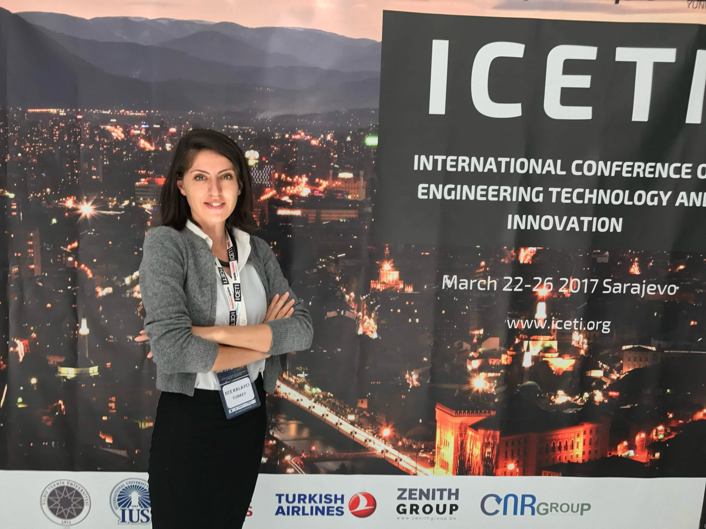

Sustainable and advanced textile materials
Studies on sustainable fiber alternatives, high-value textile structures, and advanced material performance in contemporary engineering applications.
Academic Profile
Assistant Professor, Department of Textile Engineering
Pamukkale University, Denizli, Türkiye
She works on sustainable textile materials, eco-friendly dyeing and finishing, high-performance fibers, and AI-supported textile applications.

Current Affiliation
Faculty of Engineering, Department of Textile Engineering
Profile
Dr. Ece Kalayci is an Assistant Professor in the Department of Textile Engineering at Pamukkale University. Her research bridges textile materials, process development, and sustainability-oriented innovation.
Her work focuses on high-performance fibers, sustainable alternatives derived from natural resources, environmentally conscious dyeing and finishing, and process optimization for improved environmental performance.
She also explores natural dyes, bio-based auxiliaries, and emerging digital and artificial intelligence applications that support quality, efficiency, and sustainability in textile engineering.
Focus
Studies on sustainable fiber alternatives, high-value textile structures, and advanced material performance in contemporary engineering applications.
Development of lower-impact dyeing and finishing routes, including environmentally responsible process design and performance assessment.
Research on the coloration, process behavior, and application potential of high-performance fibers such as polyetherimide and related materials.
Investigation of natural dyes, ecological carriers, and plant-based auxiliaries for more sustainable coloration and finishing systems.
Integration of digital transformation and artificial intelligence tools into textile quality control, decision systems, and process improvement.
Appointments
Pamukkale University, Faculty of Engineering, Department of Textile Engineering, Textile Sciences Division, Denizli, Türkiye
Pamukkale University, Faculty of Engineering, Department of Textile Engineering, Textile Sciences Division, Denizli, Türkiye
Universitat Politècnica de València, Valencia, Spain
Kyoto Institute of Technology, Kyoto, Japan
Training
Pamukkale University, Denizli, Türkiye
Dissertation: “Investigation of the dyeing properties of polyetherimide fibers”
Pamukkale University, Denizli, Türkiye
Thesis: “Investigation of the pretreatment of pineapple fibers”
Pamukkale University, Denizli, Türkiye
Undergraduate studies focused on textile materials, processes, and engineering fundamentals.
Research Funding
2026 - Present
Researcher / specialist, TUBITAK 1505, 2025 - 2027
Principal Investigator, Pamukkale University Starter-Level Project, 2025BSP006, 2025 - Present
Researcher, Ph.D. thesis project, 2018 - 2024
Researcher, M.Sc. thesis project, 2015 - 2016
Output
Courses
Engineering Ethics
Spring 2025-2026Digital Transformation in Textile and Artificial Intelligence Applications
Spring 2025-2026Get In Touch
For academic collaboration, research inquiries, and teaching-related communication, please use the following channels.
Department of Textile Engineering, Faculty of Engineering, Pamukkale University, 20160 Denizli, Türkiye